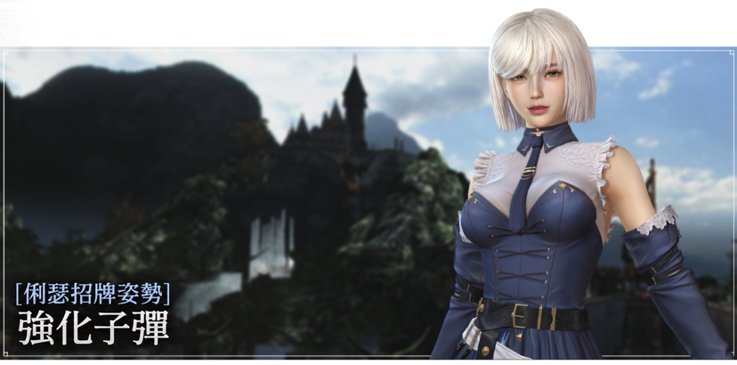
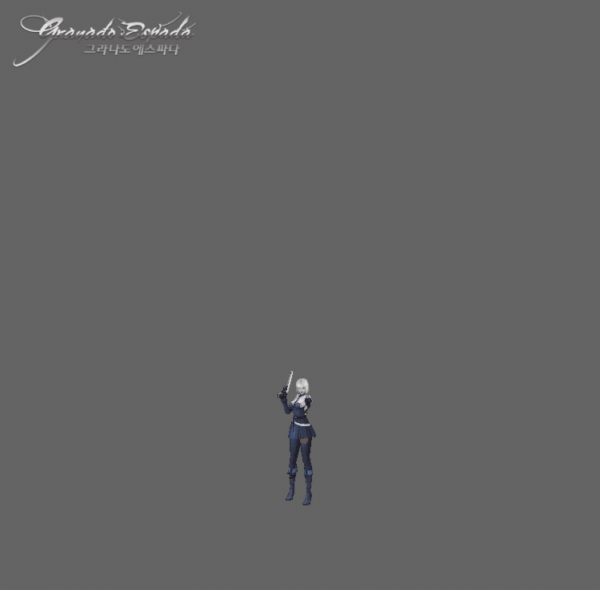
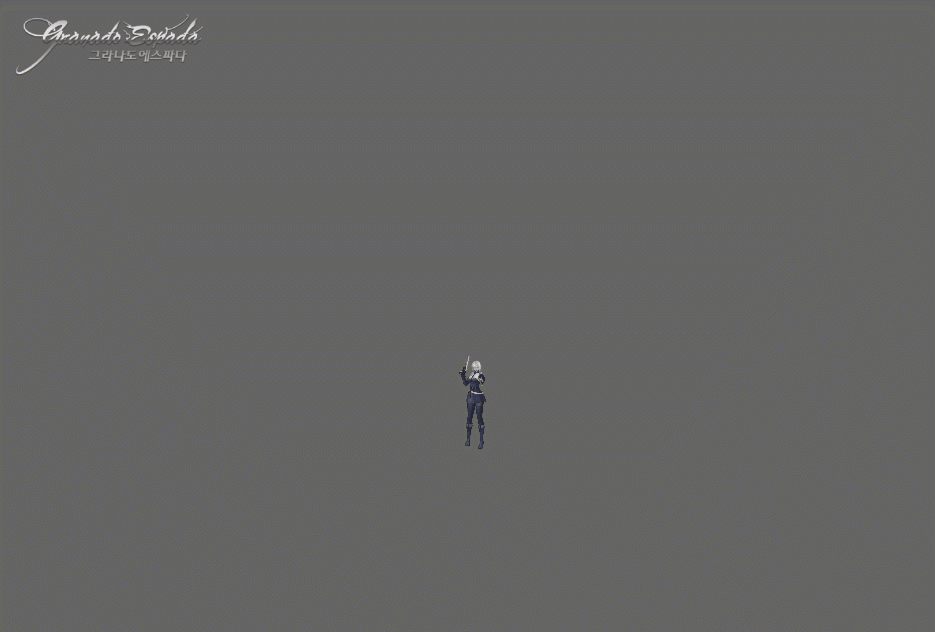
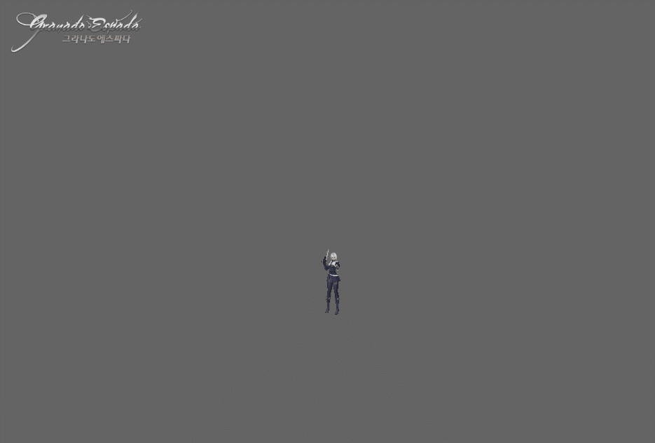
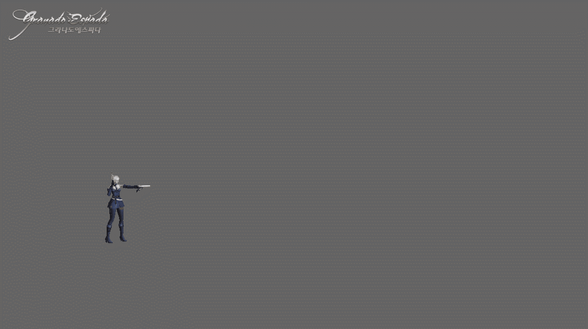
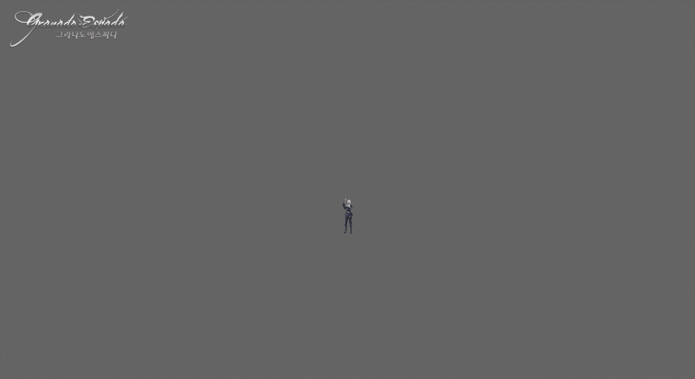
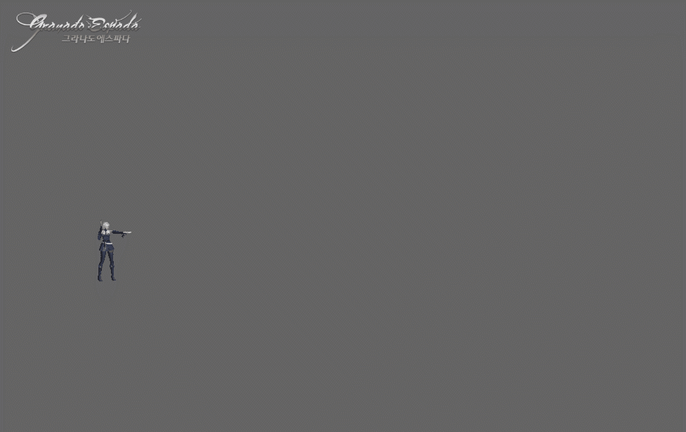

DEVELOPER'S NOTE · UNOFFICIAL ZH-HANT
俐瑟的招牌姿勢：強化子彈

大家好，我是開發者 엑시옴。
繼今年 6 月代號 L／雷歐娜的招牌姿勢「薔薇荊棘－Espina Rosa」之後，將新增俐瑟的招牌姿勢「強化子彈」。
姿勢／技能概念
「強化子彈」是將既有「自帶光環」中的俐瑟射擊術與強化權能進一步提升的姿勢。
「自帶光環」是將強化權能運用於俐瑟獨特射擊術的姿勢；「強化子彈」則將這份權能直接注入每一發子彈，依照情況選用適合的子彈攻擊敵人，讓「強化子彈」這個概念更加鮮明。
為了讓各位在戰鬥中實際感受這個概念，我們加入了透過「命運裝填」，選擇裝填 4 種子彈之一進行戰鬥的機制。
面對怪物時，可選擇以必定暴擊壓制敵人的「命運裝填－大口徑子彈」，或犧牲暴擊、換取高技能傷害倍率的「命運裝填－鋼鐵弩箭」；面對敵方玩家角色時，則使用「命運裝填－鋼鐵子彈」；需要長時間作戰時，可選擇沒有持續時間限制、能提升攻擊速度與 HP 吸收的「命運裝填－穿甲彈」。透過依照戰況切換子彈，希望各位將能體驗「強化子彈」獨有的戰鬥節奏。
基本資訊
- 裝備手槍時，即可使用「強化子彈」姿勢。
- 防具與原本的俐瑟相同，使用「大衣」。
固有技能：華麗登場
運用亞特拉斯的強化權能，提升我方的戰鬥能力。再次使用技能時，會切換增益效果。

| 華麗登場 再次使用技能時 切換增益效果 | 持續時間：300 秒 攻擊力 +30% 暴擊傷害 +50% 所有屬性抵抗力 -10 免疫力 -10 俐瑟使用時 攻擊力與暴擊傷害效果為 2 倍 攻擊等級 +1 |
|---|---|
| 持續時間：60 秒 除空中姿勢外，依各姿勢提高移動速度上限 移動速度 +15% 免疫力 +5 迴避 +10 |
姿勢技能
強化子彈
命運裝填
- 從 4 種子彈中選擇一種，強化武器。
- 一般攻擊與技能攻擊會依增益效果消耗對應的子彈。
- 持有的子彈不足以支付消耗量時，無法進行一般攻擊，技能也無法命中。
| 共通效果 | 攻擊等級 +1 物理貫穿力 +25 |
|---|

暴擊傷害 +30%
對怪物的攻擊力 +50%
對玩家角色的攻擊力 -50%

攻擊力 +50%
對怪物的攻擊力 -50%
對玩家角色的攻擊力 +20%
取消增益效果的持續時間限制
攻擊速度 +10%
HP 吸收 +5%
無視防禦力 +10%
對怪物的攻擊力 +50%
對玩家角色的攻擊力 -50%
技能無法觸發暴擊
強化子彈
雙步射擊
- 向前踏出兩步，進行兩次攻擊。
- 施放「命運裝填」期間使用此技能，會套用「命運裝填－大口徑子彈」。

| 共通效果 | 無視敵人 30 點防禦能力 施放技能時，依增益效果消耗 2 發對應子彈 對敵人施放時，賦予「爆裂」 |
|---|---|
| 大口徑子彈 | 對怪物必定暴擊 |
| 鋼鐵子彈 | 對敵方玩家角色的技能傷害為 2 倍 |
| 鋼鐵弩箭 | 對敵方怪物的技能傷害為 2 倍 |
強化子彈
螺旋射擊
- 快速旋轉，攻擊周圍的敵人。
- 施放「命運裝填」期間使用此技能，會套用「命運裝填－鋼鐵子彈」。

| 共通效果 | 無視敵人 50 點防禦能力 施放技能時，依增益效果消耗 10 發對應子彈 對敵人施放時，賦予「爆裂」 |
|---|---|
| 大口徑子彈 | 對怪物必定暴擊 |
| 鋼鐵子彈 | 對敵方玩家角色的技能傷害為 2 倍 |
| 鋼鐵弩箭 | 對敵方怪物的技能傷害為 2 倍 |
強化子彈
唯一之彈
- 將兩把槍合而為一，以祕藏的一發子彈發動攻擊。
- 施放「命運裝填」期間使用此技能，會套用「命運裝填－穿甲彈」。

| 共通效果 | 無視敵人 80 點防禦能力 施放技能時，依增益效果消耗 1 發對應子彈 對敵人施放時，賦予「爆裂」 |
|---|---|
| 大口徑子彈 | 依暴擊數值，額外無視等量的敵方怪物防禦力 對怪物必定暴擊 暴擊傷害加成數值為 1.5 倍 |
| 鋼鐵子彈 | 對敵方玩家角色的技能傷害為 2 倍 |
| 鋼鐵弩箭 | 對敵方怪物的技能傷害為 4 倍 |
強化子彈
標靶射擊
- 以敵人無法躲避的攻擊進行集中射擊。
- 施放「命運裝填」期間使用此技能，會套用「命運裝填－鋼鐵弩箭」。
| 共通效果 | 無視敵人 100 點防禦能力 施放技能時，依增益效果消耗 12 發對應子彈 對敵人施放時，賦予「爆裂」 |
|---|---|
| 大口徑子彈 | 依暴擊數值，額外無視等量的敵方怪物防禦力 對怪物必定暴擊 暴擊傷害加成數值為 1.5 倍 |
| 鋼鐵子彈 | 對敵方玩家角色的技能傷害為 2 倍 |
| 鋼鐵弩箭 | 額外無視敵方怪物 15% 的防禦力 對敵方怪物的技能傷害為 4 倍 |